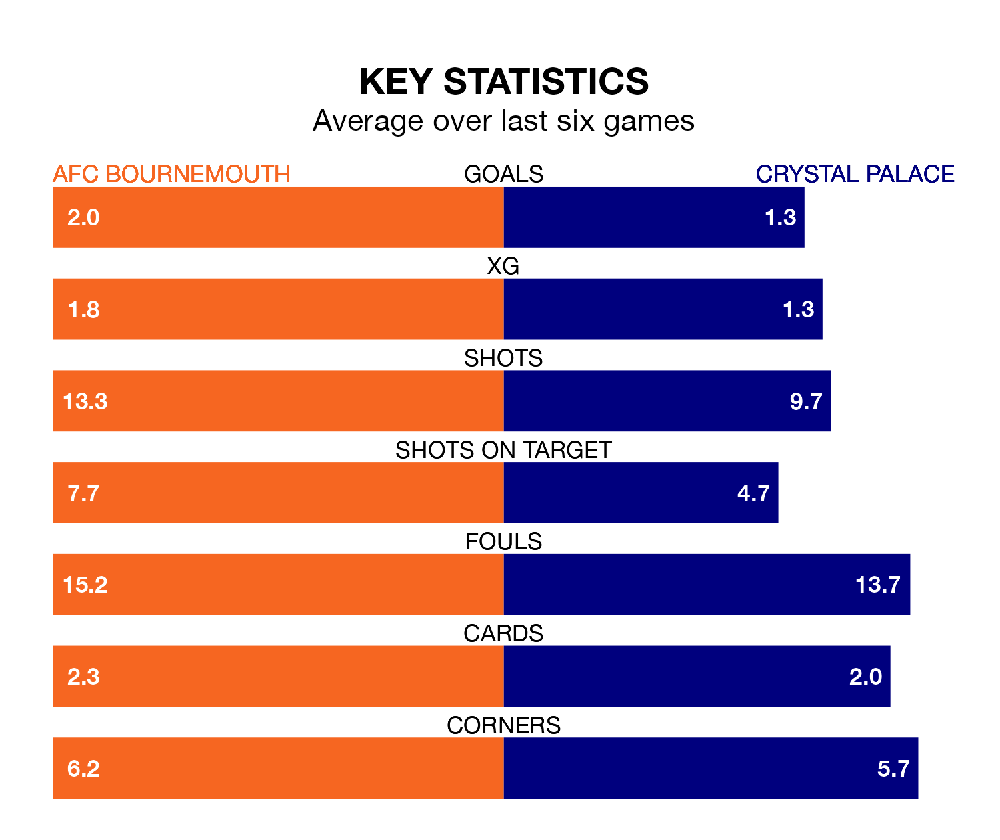

AFC Bournemouth host Crystal Palace on Tuesday at the Vitality Stadium in the Premier League.
In their last league match, on Saturday, Bournemouth beat Everton 2-1 at home, with goals from Dominic Solanke and Séamus Coleman (own goal).
Palace drew, 1-1 away at Nottingham Forest, with Jean-Philippe Mateta scoring their goals.
In Solanke-Mitchell, Bournemouth have one of the league's most on-form strikers so far this season. He has notched 16 goals in 29 appearances, to sit second in the scoring charts.
Palace's top scorers, with six goals each, are Michael Olise, Eberechi Eze, Odsonne Édouard and Mateta.
In the last 10 years, Bournemouth and Palace have played each other on 14 occasions. Bournemouth won three of them, Palace six, and they drew five times.
On average, the Cherries scored 1.0 goal and the Eagles 1.5 in those matches.
Their last meeting was on December 6, when Bournemouth won 2-0 away.
With 34 goals in 29 games so far this season, the Eagles are scoring at below the league average rate with 1.2 goals per game. And they are conceding more than average, letting in 49 goals at a rate of 1.7 per game.
The Cherries are also below average scorers, with 1.5 goals per game, compared to a league average of 1.6. They have conceded 1.8 goals per game.
The away side are 15th in the table after 29 games, of which they have won seven and drawn nine, earning 30 points.
The hosts are two places ahead of Palace in 13th, with 10 wins and eight draws putting them on 38 points.
Bournemouth are in reasonable form in the Premier League, with three wins and two draws from their last six games.
With a win and three draws over that period, Palace's form is worse – they have taken six points from 18, compared to Bournemouth's 11.
Tuesday's match will be refereed by Graham Scott, who has taken charge of two Premier League games so far this season, issuing no red cards and booking four players. He has not awarded any penalties.
He is yet to oversee a match featuring either Bournemouth or Palace this season.
Updated: 10:31 (UTC), 31/03/24